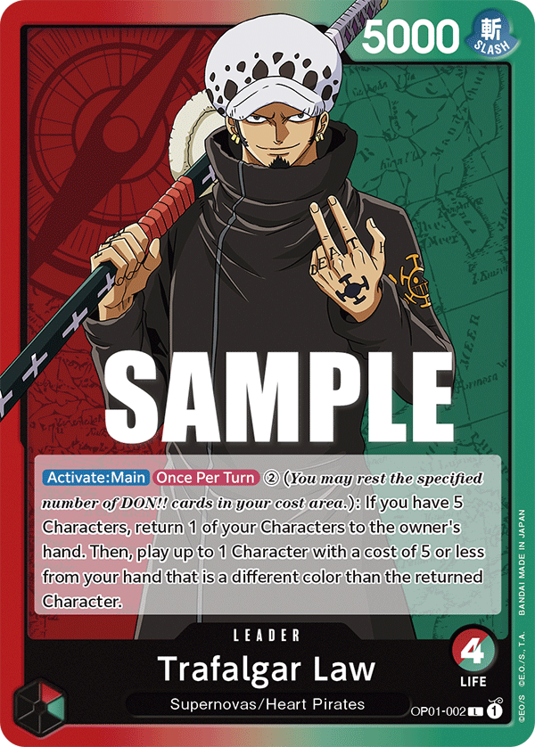

Cada carta.
Uma história.
Um novo mundo.
Entenda o jogo. Conheça as cartas. Reviva a aventura.
Seu próximo tesouro está além da ilustração.
Para quem vive One Piece.


Uma coleção digna de lenda.
Seis cartas. Seis formas de deixar sua marca na Grand Line.
Seu próximo tesouro.
Busque um personagem. Descubra uma carta. Explore suas possibilidades.
Seleção de demonstração
Nenhuma carta por aqui.
Tente outro nome ou uma combinação diferente de filtros.
Seis cores. Infinitas estratégias.
Descubra a identidade de cada cor e encontre seu jeito de jogar.
O mapa antes da aventura.
OS CONCEITOS QUE TODO PIRATA PRECISA CONHECER
 ALÉM
ALÉMDA CARTA
✦
A aventura não termina
na borda da carta.
Uma ilustração pode guardar um reencontro, uma batalha ou o começo de um sonho. A proposta do Atlas é conectar o jogo ao universo que fez você se apaixonar por One Piece.
- 01
A história por trás da arte
Identificar a cena, a capa ou a ilustração original, com fontes e controle de spoilers.
- 02
Do mangá para a sua coleção
Relacionar capítulos e episódios após verificação de cada versão da carta.
- 03
Onde encontrar seu tesouro
Consultar a coleção de origem e distinguir reimpressões, artes alternativas e promos.
Todo grande pirata
começa com uma escolha.
Explore a biblioteca e descubra as cartas que fazem parte da sua história.
Encontrar minha próxima carta ↗